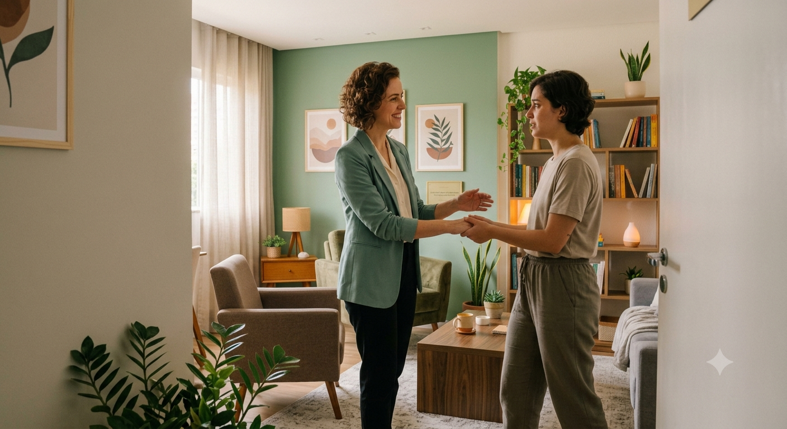
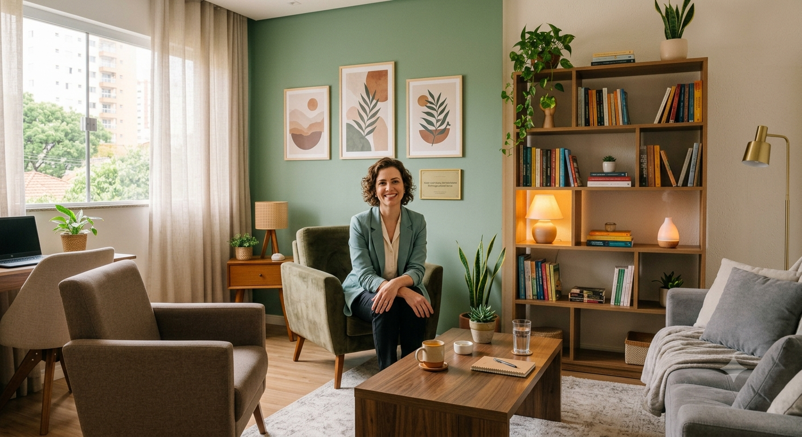
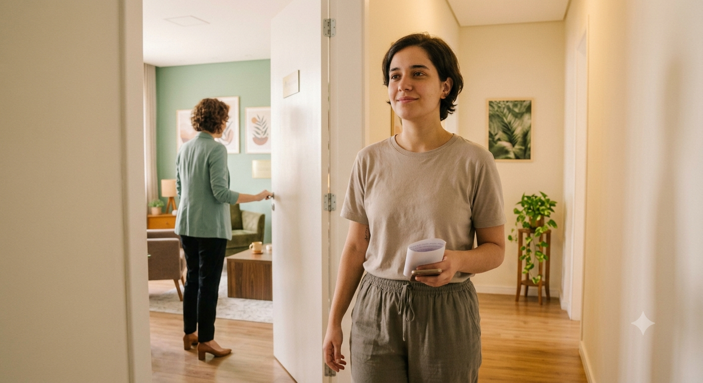
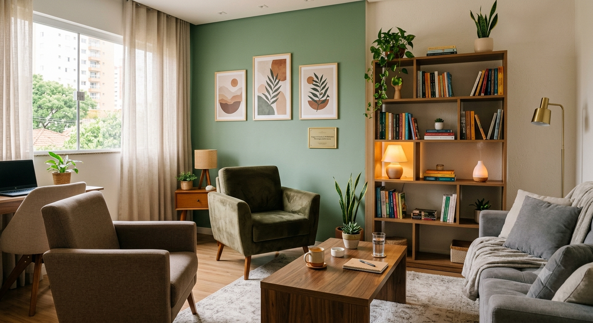

Psicóloga em Londrina | Atendimento para Adolescentes e Adultos
Psicoterapia acolhedora, humana e baseada em evidências. Promovendo autoconhecimento, saúde emocional e qualidade de vida.

Sobre
Sobre a Psicóloga Rebeka
Como psicóloga clínica em Londrina, meu objetivo é oferecer um espaço seguro, ético e sigiloso para que você possa falar sobre suas dores, medos e inseguranças sem receio de julgamentos.
Acredito em um atendimento profundamente humano e acolhedor, unindo a empatia à eficácia dos tratamentos baseados em evidências científicas.
Atendimento Humanizado
Cada paciente é único. Meu olhar é voltado para a sua história, compreendendo suas necessidades de forma acolhedora.
Psicologia Baseada em Evidências
Utilizo abordagens cientificamente comprovadas, garantindo um tratamento estruturado e eficaz para o seu sofrimento.
Benefícios
Como a Psicoterapia Pode Ajudar Você
O tratamento psicológico é um investimento na sua qualidade de vida. Através da psicoterapia em Londrina, você encontra ferramentas para lidar com os desafios do dia a dia.
Saúde emocional
Desenvolva resiliência e aprenda a lidar com sentimentos de ansiedade, depressão e estresse de maneira construtiva.
Qualidade de vida
Melhore seus relacionamentos, seu desempenho profissional e sua satisfação pessoal no dia a dia.
Equilíbrio emocional
Aumente o seu autoconhecimento, compreendendo seus padrões de comportamento e encontrando o seu ponto de equilíbrio.
Atuação
Serviços de Psicologia
Conheça as principais áreas de atuação. Atendimento especializado em Londrina para promover o seu bem-estar.
Psicoterapia para Adolescentes
Atendimento psicológico especializado para adolescentes, promovendo desenvolvimento emocional, autoestima, relacionamento familiar, escolar e social.
Psicoterapia para Adultos
Atendimento psicológico voltado ao equilíbrio emocional, autoconhecimento, qualidade de vida e saúde mental.
Tratamento para Depressão
Acompanhamento psicológico individual para pessoas com sintomas depressivos, auxiliando na recuperação emocional.

Tratamento para Estresse
Atendimento psicológico para redução do estresse, prevenção do esgotamento emocional e melhoria da qualidade de vida.
Tratamento para Ansiedade
Abordagem focada em identificar gatilhos e desenvolver estratégias práticas para lidar com crises de ansiedade e fobias.
Vantagens
Por que Escolher a Psicóloga Rebeka?
Compromisso com a sua saúde mental através de um atendimento de excelência.
Atendimento Online
Faça suas sessões no conforto da sua casa, com a mesma eficácia e qualidade do presencial. Psicóloga online acessível onde você estiver.
Atendimento Presencial
Ambiente confortável, climatizado e sigiloso na Zona Norte de Londrina, preparado especialmente para o seu bem-estar.
Atendimento aos Sábados
Horários flexíveis para quem possui uma rotina agitada durante a semana. Disponibilidade aos sábados pela manhã.
Sigilo Profissional
Atendimento baseado na ética profissional rigorosa, garantindo que tudo o que for conversado em sessão permaneça confidencial.
Acolhimento e Individualização
- Atendimento acolhedor e totalmente individualizado.
- Acompanhamento do núcleo familiar quando necessário (especialmente para adolescentes).
Público
Quem Pode se Beneficiar da Psicoterapia?
A psicoterapia é indicada para pessoas de todas as idades que buscam apoio emocional, desenvolvimento pessoal ou enfrentam desafios psicológicos.
- Adolescentes e Jovens: lidando com pressões escolares, identidade e ansiedade.
- Adultos: buscando autoconhecimento e equilíbrio na vida pessoal e profissional.
- Profissionais da saúde e educação: lidando com alto nível de estresse e esgotamento.
- Qualquer pessoa buscando apoio para lidar com medos, inseguranças e crises de ansiedade/depressão.
É normal ter receios antes da 1ª consulta?
Sim. É muito comum sentir insegurança para iniciar, medo de expor a vida pessoal, de julgamentos ou dúvidas sobre o tempo de tratamento. O espaço terapêutico é livre de preconceitos e foca apenas no seu bem-estar e no seu tempo.

Processo
Como Funciona o Atendimento
Um processo simples, transparente e focado em acolher você desde o primeiro contato.
Agendamento
Entre em contato via WhatsApp. Vou tirar suas dúvidas iniciais, verificar horários disponíveis e agendar sua sessão de avaliação.
Primeira Consulta
O primeiro encontro serve para nos conhecermos, entender o que trouxe você à terapia e alinhar como será o nosso trabalho juntos.
Sessões Regulares
Encontros semanais de 50 minutos (Online ou Presencial em Londrina). Um espaço seguro para falar abertamente e desenvolver estratégias de enfrentamento.
Dúvidas
Perguntas Frequentes
Respostas para as dúvidas mais comuns de quem busca atendimento psicológico.
Onde Estamos
Agende sua Consulta
Endereço (Zona Norte de Londrina)
Av. Saul Elkind, 4601
Zona Norte, Londrina - PR
Atendimento também online para todo o Brasil.
Horário de Atendimento
Segunda a Sexta: 08:00 às 12:00 | 13:30 às 18:00
Sábado: 08:00 às 12:00
Contatos
WhatsApp: (43) 98651-3399
Telefone: (43) 3345-8791